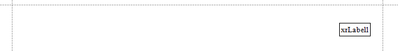
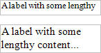

Maintain the Size and Content of Data-Bound Controls
Use the control's Can Grow and Can Shrink properties to make a data-bound control automatically adjust its height to its contents.

| Can Grow = No | Can Grow = Yes |
|---|---|
 |
| Can Shrink = No | Can Shrink = Yes |
|---|---|
 |
 |
Note
This feature does not work with anchoring enabled, as well as for labels that are used to display summary function results.
Use the Auto Width property to make a data-bound Label or Character Comb automatically adjust its width to its content. This option behavior depends on the control's current horizontal alignment (Text Alignment property value).
Text Alignment = Left
Text Alignment = Right

Text Alignment = Center
The control's Word Wrap property allows you to make a control display its contents in multiple lines when it does not fit into the control's dimensions.
| Auto Width = No, Word Wrap = No | Auto Width = No, Word Wrap = Yes |
|---|---|
 |
 |
| Auto Width = Yes, Word Wrap = No | Auto Width = Yes, Word Wrap = Yes |
|---|---|
 |
|
You can also use the opposite Text Fit Mode property to adjust a label or table cell's font size to fit the control's bounds.

| Text Fit Mode = None | Text Fit Mode = Grow Only | Text Fit Mode = Shrink Only | Text Fit Mode = Shrink And Grow |
|---|---|---|---|
 |
 |  |
 |
This property is not available in the following cases:
- The Can Grow, Can Shrink or Auto Width option is enabled;
- The label's Angle property is specified;
- The control's Anchor Horizontally or Anchor Vertically property is set to Both.